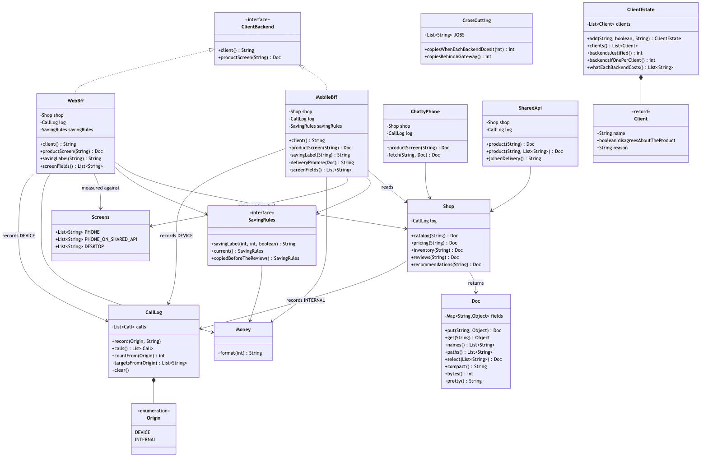

Backends for Frontends Pattern
Give each frontend its own backend, owned by the team that owns the screen, whose only job is to turn what the shop knows into the exact shape that one screen draws — and then accept that you now have two places for a business rule to live, and that they will disagree without telling you.
Think of a restaurant with one kitchen and two rooms: a dining room where couples settle in for two hours, and a counter by the window for people who have twenty minutes before a train. Give both rooms the same waiter working from one script and his script becomes the union of what either room might want — the full wine list, the provenance of the lamb, the dessert menu — recited to everybody. The couple enjoy it. The commuter misses their train. The fix is not a second kitchen, because the food is the same food and a second kitchen is two places for a recipe to live. The fix is a second waiter who works the counter and is allowed to change his own script tomorrow morning.
The shop sells one copper coffee maker. The phone's product screen draws six things; the desktop page draws fifteen. Five services between them hold all of it. Both screens are correct, both teams are being reasonable, and they disagree about what a product is.
Run
./gradlew runSeven acts. The first four are the problem and the pattern; the last three are the bill.
Act 1 is the design shops arrive at by accident — the phone calls all five services itself:
calls from the phone: 5
downloaded: 1767 bytes
fields available: 29
fields drawn on screen: 6Five round trips before a single pixel, in sequence, because the later calls need the earlier answers. On office wifi nobody notices. On a train each one is a wait of its own.
Act 2 is the obvious fix — one shared endpoint in front of the five — and it works:
calls from the phone: 1
downloaded: 1755 bytes
of that, actually drawn: 212 bytes
thrown away on arrival: 1543 bytes (87%)
Now the obvious fix — ask for only the fields you want:
GET /api/products/4417?fields=… → 212 bytesTwo hundred and twelve bytes. If this pattern were about payload size, the story would end there, with a query parameter and no new processes to run. It does not end there, because of the next request the phone team makes:
delivery sentence: not available -- a field like this belongs to one client,
and this endpoint belongs to all of themOne line of text — "Free delivery, arrives Friday" — joined from stock, the delivery rules and the clock. Half an hour of work. But a new field on a shared endpoint changes a document that five other clients also receive, so it joins a queue behind work that has nothing to do with the phone. The phone team could have written it in an afternoon and waits five weeks. That is an organisational failure with a technical cause, and it is the one this pattern removes.
Act 3 gives each screen its own backend:
phone app asks its own backend, and is sent:
{
"title": "Copper Filter Coffee Maker, 1 Litre",
"price": "£47.99",
"image": "https://img.shop.example/4417/hero-320.jpg",
"rating": 4.6,
"ratingCount": 218,
"delivery": "Free delivery, arrives 2026-09-18"
}
desktop store asks its own backend, and is sent 15 fields including the
description, the specification, five images and three reviews.The price is the string "£47.99"; the pricing service returned 4799. That conversion now happens in a process that can be corrected this afternoon, rather than in an app customers will still be running in two years.
Act 4 puts the three designs side by side, and the two right-hand columns are the point:
design bytes device internal
five calls from the phone 1767 5 5
one shared endpoint 1755 1 5
a backend for the phone 196 1 4Device calls fall from five to one. Internal calls barely move. The work did not go away — it moved onto a network that costs nothing.
And then the bill
Act 5 is the failure that makes this pattern expensive. The pricing team adds a condition to the discount rule: a higher price may only be advertised as a saving if it was genuinely in force long enough. For this product it went up eleven days ago, and both backends are told so.
desktop store says: (nothing — no saving may be claimed for this price)
phone app says: Save £12.00Same product, same price, same second, and one of those screens is making a claim the shop is not allowed to make. The phone's backend holds a copy of the rule taken before the review. Nothing throws, nothing is logged, and nothing about that copy is careless — it was correct when written, it is well named, and its tests pass. It is wrong only in relation to a decision made months later by people with no reason to know it existed.
The rule that prevents it: a backend for a frontend may hold the shape. Anything the shop would still believe with every client switched off belongs behind it.
Act 6 is the neighbouring pattern. Four jobs — token, rate limit, TLS, access log — that every request needs whoever sent it:
each backend doing it itself: 8 copies across 2 backends
a gateway in front: 4 copies, whatever the number of backendscopiesBehindAGateway() takes no argument, and that absence is the answer. The line is one question: "what does this screen need?" belongs in a backend for that frontend; "is this request allowed in at all?" belongs in front of all of them. A gateway is about entry. A backend for a frontend is about shape.
Act 7 is how many. Six clients, and the test is not the device and not the team:
one per client: 6 backends
one per genuine disagreement: 3 backendsThe tablet shows the phone's fields in a wider column, so it is the same backend and a different stylesheet. Each extra backend costs a pipeline, a place in the on-call rota, a dependency upgrade every time a shop service changes, and one more process to look at during an incident. Two backends is a pattern. Nine is a department.
Test
./gradlew test46 tests, in about a second, with nothing random and no sleeping. The shop's data is fixed so that every byte count is identical on every machine, and DemoRunsTest asserts that the numbers quoted in these documents are the numbers the program actually prints.
Two tests are worth reading before the rest. MobileBffTest.sendsOnlyWhatIsDrawn asserts assertEquals(Screens.PHONE, screen.paths()) — equality, not containment, so a seventh field fails the build. That is the only reason a backend stays the size of its screen for longer than a year. And WebBffTest.disagreesWithThePhonesBackend asserts the two backends return different field lists: if they ever converged, the shop would be paying twice for one job, and the pattern should be withdrawn rather than admired.
One JVM, no infrastructure
This project starts nothing. No network, no HTTP, no JSON library, no Docker, no framework. Doc is an ordered map that can print and measure itself, and Shop returns fixed data in microseconds.
That is a deliberate trade. What you get is the pattern's shape: what each backend decides, which calls it does not make, where a presentation decision belongs, and what each of the three costs looks like from the outside. None of that changes when the backends become real services. What you do not get is a real network — every claim about round trips here is made by counting them, not timing them — concurrency, failure handling, gzip, schemas, or versioning. The four internal calls are sequential where a real backend would fan them out, which means this project understates the pattern's benefit rather than overstating it.
For the version where the two backends are two independently deployable HTTP services — three Spring Boot applications, the shop and a backend in front of it for each screen, so you can watch two differently shaped JSON documents of visibly different sizes come back from two addresses — see real/. It measures 196 bytes against 1409 over a real connection, and counts the phone's four internal calls from the shop's end rather than the caller's. It is optional and additive: it is a separate Gradle build, so ./gradlew test here never resolves Spring and still passes offline.
Technologies and versions
Two tiers, two very different dependency lists. Nothing here is a range and nothing is latest: a course that worked last year and does not work today is worse than one that never took the dependency. The Java versions are pinned in ../gradle/libs.versions.toml because Gradle can read that file, and the rest in ../docs/pinned-versions.md.
Tier 1 — this project. Clone it, run ./gradlew test, and it passes with no network and no Docker.
| What | Version | Why it is here |
|---|---|---|
| Java | 21 | The repository standard, requested through the Gradle toolchain block |
| Gradle | 9.2.1 | The wrapper in this directory; no separate install needed |
| JUnit 5 | 5.10.2 | The 46 tests. The only Tier 1 dependency in the whole category |
There is deliberately no JSON library. Doc is an ordered map that can print and measure itself, which is what makes every byte count in the demo identical on every machine — and a byte count that changes with the weather could not be quoted in a document or a video.
Tier 2 — real/, a separate Gradle build. Three JVM processes, no containers.
| What | Version | Why it is here |
|---|---|---|
| Spring Boot | 4.1.1 | All three applications: the shop, the backend for the phone and the backend for the desktop. Newest generally available release; a milestone is not a release |
spring-boot-starter-web | with Boot 4.1.1 | The endpoints each of the three exposes |
spring-boot-starter-restclient | with Boot 4.1.1 | The calls each backend makes into the shop. In Boot 4 this is a separate starter from web, which is a change from Boot 3 and costs one wasted run to discover |
spring-boot-starter-actuator | with Boot 4.1.1 | Health, so the demo script can wait for a service rather than sleeping and hoping |
| Spring dependency-management plugin | 1.1.7 | Applies the Boot BOM so no starter carries a version of its own |
No Docker, no database and no message broker, because none of them would add a claim. The thing Tier 2 exists to show is two differently shaped JSON documents of visibly different sizes coming back from two addresses over a real connection — 196 bytes against 1409 — and three processes on a laptop show that as well as thirty containers would.
Learning Material
| Document | What it covers |
|---|---|
docs/problem-statement.md | Five calls from a train, and the field a shared endpoint could not give anybody |
docs/backends-for-frontends-pattern-explained.md | Two waiters, one kitchen — the pattern, the code, and the bill |
docs/class-diagram.md | The types — and why two arrowheads into one interface is the pattern |
docs/architecture-diagram.md | What runs where, in both tiers, and why the shop is not duplicated |
docs/data-flow-diagram.md | One screen, both designs, and the bytes at every hop |
docs/sequence-diagram.md | One call from each device, four behind each backend, two different documents back |
docs/uml-diagram.md | Five sequences: the two rejected designs, the pattern, and two failures |
docs/animation.html | Twelve steps in a browser: one document shrinking, then the three costs |
docs/prerequisites.md | What you need to know, and what you explicitly do not |
docs/session.md | A one-hour taught session with four exercises |
docs/spec.md | The generated specification, with measured test counts and timings |
docs/youtube.md | Title, description and chapters for the video |
The pattern in one picture
The class diagram, and the two arrowheads into one interface are the pattern: a backend for the phone and a backend for the desktop, both answering the same contract, each free to return a completely different document. One shop sits underneath both of them, and the field lists each screen draws are written down as data so a test can assert equality rather than containment.

What runs where
Both tiers on one page. One shop at the bottom, two backends above it, one client above each backend. The shop appears once — the fix for two screens wanting different data is a second waiter, not a second kitchen.

How the data moves
The left branch is the design shops arrive at by accident; the right branch is the pattern. Watch the number on the last arrow: seventeen hundred bytes of internal answers become under two hundred bytes of screen.

Who calls whom, in order
The same screen drawn twice. Each device makes one call, to a backend that belongs to it; each backend then makes four calls inside the shop's network, where a round trip costs nothing. The phone gets six fields back and the desktop gets fifteen, from one shop, in the same second.

All five sequences
The full set from docs/uml-diagram.md: the two designs this pattern replaces, the pattern itself, and the two things it costs.
One. The chatty phone. Five calls across a mobile network, in sequence, before a single pixel is drawn.

Two. One shared endpoint — better, and still wrong. One call and almost the same number of bytes, most of them discarded on arrival; and the field the phone team wanted could not be added, because the endpoint belongs to five other clients.

Three. A backend per frontend. One call in, four inside the shop, and a document shaped like the screen that asked for it.

Four. The bill, part one: two backends, one rule, two answers. A pricing rule copied into one backend goes quietly out of date, and the two screens make different claims about the same price in the same second. Nothing throws and no test in either backend notices.

Five. The bill, part two: where the shared jobs go. Tokens, rate limits, TLS and access logging are needed by every request whoever sent it, so they belong in front of all the backends rather than being copied into each. A gateway is about entry; a backend for a frontend is about shape.

Video
The narrated walkthrough is built from video/scenes.py by video/build_video.sh. The rendered file is not committed — see the repository README for why.
Where this sits
This is pattern 40, the third of the platform-design-patterns as the category lists them. It depends on none of the others; the listed order is a dependency order for the material, not a difficulty order. If you have ever shipped a mobile app that had to make four calls to draw one screen, you already understand the problem.
The distinguishing question, if you only remember one thing: is the endpoint named after a resource, or after a screen? /api/products/4417 belongs to everybody and therefore to nobody in particular. /phone/product-screen/4417 belongs to one team, and that team can add a field to it this week.
Then ask the second question, which is the one that gets skipped: what is inside your backend that the shop would still believe with every client switched off? Tax, discounts, stock allocation, what a price means. Every one of those found inside a client-specific backend is a copy waiting to disagree with another copy, and no test you can write in either backend will ever notice.